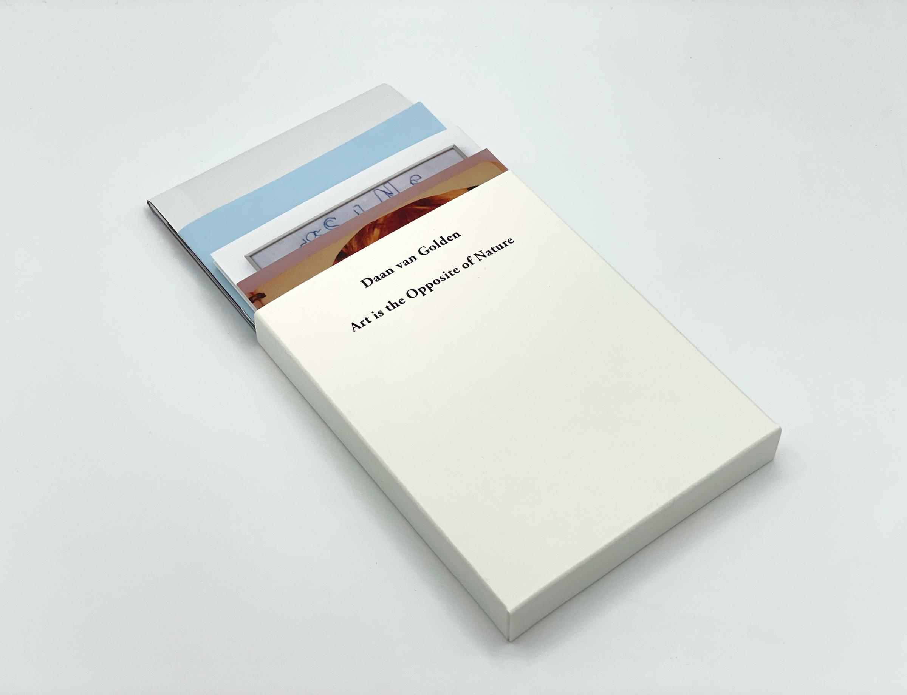

HUONE
日本デザインセンターのコピーライター刈川と、
アートディレクター／グラフィックデザイナーの鈴木によるパブリッシング。
「HUONE」は、フィンランド語で「部屋」を意味する。社会のなかで語られる大局的な言葉の内側には、
個人の本音や細やかな感情が存在している。
HUONEは、それらの確かな地熱を持つ声を、
ひとつの部屋を構築するようにまとめ上げるプロジェクト。
A publishing initiative by copywriter Karikawa
(Nippon Design Center) and art director / graphic designer Suzuki.
"HUONE," the name of the group and its inaugural publication,
signifies "room" in Finnish. Inside the overarching words spoken in society,
individual inner truths and subtle emotions exist.
HUONE is a project that compiles these voices,
embedded with an unmistakable geothermal warmth, as if building a single room.

UNLABELED 2026年刊行 デザイン：鈴木 編集：刈川
お問い合わせは下記よりお願いいたします。
ta-suzuki@ndc.co.jp